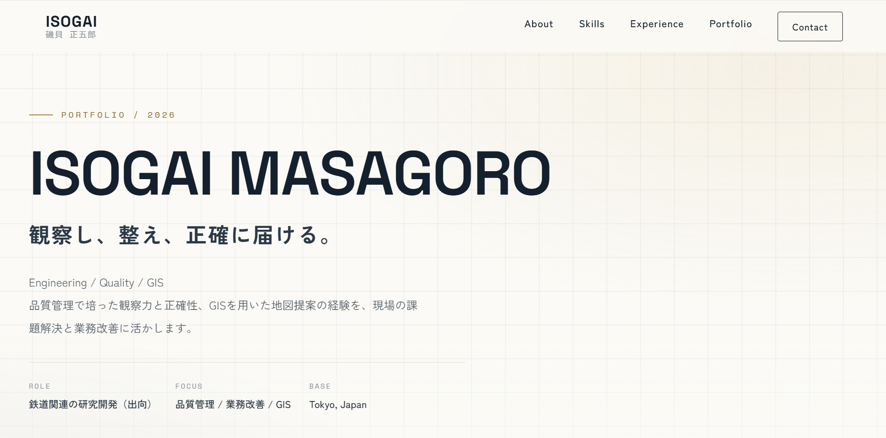

WORK / WEB DESIGN / PORTFOLIO
本ポートフォリオサイト経験と制作実績を伝えるWebサイト
観察し、整え、
正確に届ける。
品質管理・業務改善・GIS・Web制作の経験を紹介する、自身のポートフォリオサイトです。HTML/CSS（BEM設計）とVanilla JavaScriptで構築し、GitHub Pagesで公開しています。
公開サイトを見る （新しいタブで開きます）
01 / OVERVIEW
制作の概要
自己紹介、スキル、経歴、経験・実績、お問い合わせをひとつのサイトに整理。これまでの経験と制作物を、具体的な画像や詳細ページから確認できる構成にしています。
明るい背景に濃色の文字と落ち着いたアクセントカラーを組み合わせ、情報の読みやすさと統一感を意識しました。
02 / IMPLEMENTATION
主な実装内容
- 01
HTML/CSSとBEMによる構築
セマンティックなHTMLとBEMによるクラス設計を用い、セクションやカード、詳細ページの見た目を共通化しています。
- 02
レスポンシブとアクセシビリティ
画面幅に応じてレイアウトとメニューを切り替えます。画像の代替テキスト、見出し構造、メニューの開閉状態などにも配慮しています。
- 03
JavaScriptによる操作と表示
モバイルメニュー、スクロールに応じたヘッダーの表示、実績カードなどのアニメーションをVanilla JavaScriptで実装しています。
- 04
実績紹介と継続的な更新
実績カードから詳細ページや公開サイト、PDF資料へ案内。GitHub Pagesを使い、制作実績や紹介内容を更新しています。